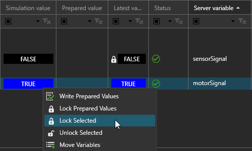

Locking Values
Locking allows you to set fixed values for variable pairs. The fixed
or locked value is used when the source and destination variables in the
pair synchronize with one another. The values of simulation and server
variables in the pair can change during a simulation, but when they synchronize
with one another, the fixed value, not the value of the source variable,
is used to update the destination variable.
This is helpful for manually testing scenarios and specific control
signal values. For example, you could test and simulate the result of
sensor failure as well as a condition where a motor is never turned off.
Note that you can lock and unlock values during a simulation.

To lock/unlock a value:
- Select the variable pairs you want to lock.
- Right-click, and then do one of the following:
- To lock the value, click Lock
Selected. The value of the simulation variable is used
as the fixed value.
- To unlock the value, click Unlock
Selected. This means the value of the source variable is
used to update the destination variable.
- To lock using a prepared value, click Lock Prepared Values. This means the value
in the Prepared value column is used as the fixed value. Generally,
this is used to set the value of a variable that is constantly
changing.
To edit a prepared value:
- Double-click the cell in the Prepared value column.
- Input the value. If the variable type is Boolean,
click the cell to set either a true or false value.
- Repeat steps 1 and 2 as needed for other variable
pairs.
- Right-click, and then click Write
Prepared Values. Values in the Prepared value column are then
assigned to simulation variables.